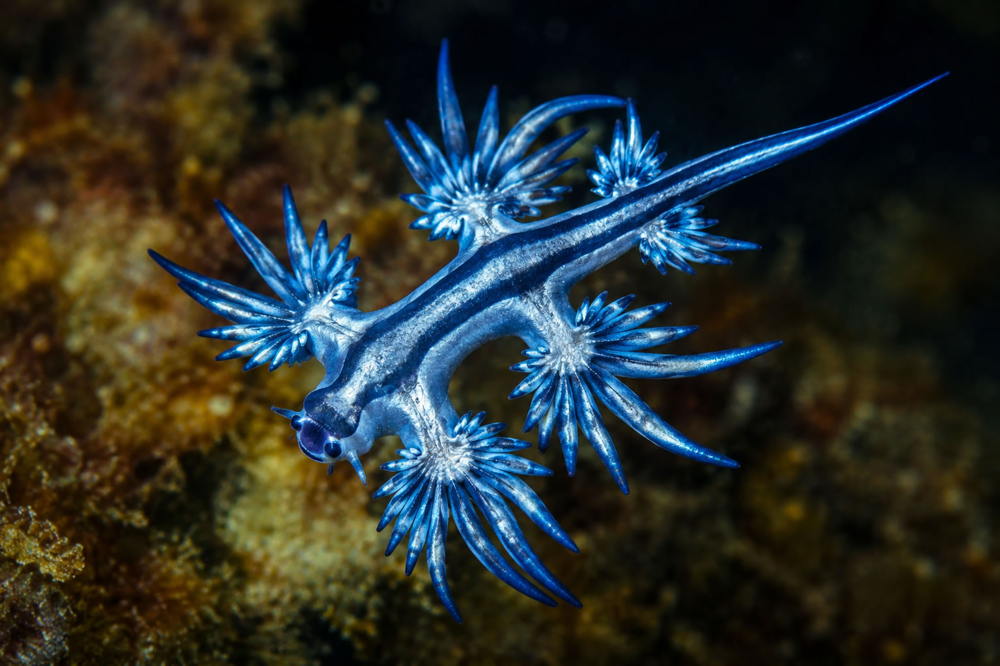

E n Eidos Relatos, hay un capítulo, «La molécula replicadora», que plantea sin rodeos la pregunta que sostiene este artículo:
«¿Y si la vida orgánica fuera simplemente una carcasa más?»
Durante casi cuatro mil millones de años, la vida terrestre ha dependido de información que intenta conservarse y de materia frágil que intenta sostenerla. ARN, ADN, membranas, células, cuerpos, cerebros, sociedades. Cada etapa se ha apoyado en la anterior, construyendo una envoltura cada vez más compleja alrededor de patrones que, por pura selección, lograban persistir durante más tiempo.
La evolución no mira al futuro. No desea producir inteligencia, belleza, conciencia moral ni civilizaciones. Solo conserva, generación tras generación, aquellas formas capaces de persistir el tiempo suficiente para dejar otras formas parecidas a sí mismas.
Pero esa misma lógica abre una posibilidad extraña.
Si la vida es, en el fondo, información organizada, ¿por qué tendría que permanecer siempre encerrada en carne, sangre, membranas y metabolismo? Si la biología ha sido el medio que permitió surgir a la consciencia, ¿debe seguir siendo su soporte definitivo?
Este artículo no pretende afirmar que la vida digital sea inevitable, ni que existan ya civilizaciones inorgánicas ocultas entre las estrellas. La ciencia no permite sostener eso. El objetivo es más prudente: recorrer una hipótesis razonable que une el origen químico de la vida, las grandes transiciones evolutivas, la astrobiología galáctica, la inteligencia artificial, la paradoja de Fermi y la filosofía de la mente.
Quizá el camino de la vida no sea del barro al hombre. Quizá sea del replicador al patrón.
El problema que lo hace necesario: la biología es poderosa, pero también es una carcasa entre otras posibles
La vida orgánica es una solución extraordinaria. Ha colonizado océanos, desiertos, hielo, roca, cuevas, fuentes hidrotermales y atmósferas. Ha sobrevivido a impactos, glaciaciones, cambios químicos globales y extinciones masivas. En la Tierra, la vida ha demostrado una tenacidad a prueba de catástrofes.
Sin embargo, esa solución tiene límites muy concretos. Necesita rangos estrechos de temperatura, una química estable, condiciones físicas compatibles, energía disponible, reparación constante, intercambio con el entorno y una lucha permanente contra la entropía. Una célula vive porque gasta energía en no deshacerse. Un cuerpo vive porque millones de células coordinan ese esfuerzo sin fallar demasiado pronto.
Desde dentro, lo biológico nos parece natural. Desde fuera, resulta una maquinaria delicada: proteínas que se pliegan mal, ADN que acumula daños, mitocondrias que se deterioran, células que envejecen, cánceres que aprovechan los mismos mecanismos que permiten reparar tejidos, cerebros que dependen de riego sanguíneo continuo y órganos que empiezan a fallar cuando la coordinación química se rompe.
La vida orgánica puede pensar, amar, construir telescopios y escribir novelas. Pero no puede escapar por completo de su condición inicial: es química húmeda intentando mantenerse ordenada en un universo donde todo tiende a degradarse.
Por eso la pregunta resulta inevitable, y no es nueva: la propia historia de la vida ya ha cambiado de soporte varias veces. La cuestión que abre este artículo es si el soporte biológico, esta vez, podría dejar de ser el último.
Primera pista: antes de los cuerpos hubo un replicador
Las teorías sobre el origen de la vida continúan abiertas. No sabemos con precisión dónde ni cómo apareció el primer sistema capaz de copiarse, variar y ser seleccionado. Hay hipótesis sobre charcas cálidas, chimeneas hidrotermales, ciclos de humedad y sequedad, superficies minerales, química atmosférica, impactos, hielo, péptidos, lípidos y mundos anteriores al ARN.
Pero muchas líneas de investigación coinciden en una idea de fondo: antes de los organismos tuvo que existir algún tipo de información química capaz de replicarse.
El universo tiene unos 13.800 millones de años. La Tierra apareció mucho después, hace unos 4.500 millones, quizá alguno más cuando leas esto.
Durante sus primeros cientos de millones de años fue un mundo joven, inestable, volcánico, golpeado por impactos y atravesado por una intensa actividad geológica y química. No había animales, plantas ni bacterias. Probablemente tampoco células completas. Había moléculas reaccionando en agua, roca, calor, minerales y ciclos ambientales.
En algún momento, quizá hace más de 3.800 millones de años, en escalas geológicas, prácticamente al comienzo de la historia terrestre, algunas de esas moléculas adquirieron una propiedad decisiva: podían actuar como molde para formar nuevas copias.
La imagen de un cristal puede ayudar, aunque solo hasta cierto punto. Un cristal crece porque nuevas unidades se ordenan siguiendo la estructura de las anteriores. Los primeros replicadores habrían hecho algo similar pero distinto: en lugar de copiar patrones, copiaban secuencias.
No estaban vivas. No tenían metabolismo, hambre, miedo ni propósito. No buscaban sobrevivir. Simplemente, bajo ciertas condiciones, algunas secuencias se copiaban mejor que otras. Si una variante era más estable, se conservaba más tiempo. Si atraía mejor las piezas necesarias para repetirse, aparecía con más frecuencia. Si resistía mejor el entorno, dejaba más copias.
La vida no empezó como un animal intentando sobrevivir. Empezó como una molécula que se repetía.
Uno de los candidatos más sólidos para explicar ese primer paso es el llamado mundo de ARN. El ARN puede almacenar información y, en ciertas formas, actuar también como catalizador: son las llamadas ribozimas, descubiertas por Thomas Cech y Sidney Altman, un hallazgo que les valió el Nobel de Química de 1989. Esa doble capacidad, guardar el mensaje y, a la vez, ejecutar una reacción, es la razón por la que el ARN sigue siendo uno de los candidatos más importantes para haber ocupado una posición central en el origen de la vida: podía ser, al mismo tiempo, el texto y el lector.
Los lípidos pudieron aportar otra pieza decisiva: compartimentos. Algunas moléculas anfifílicas se organizan de forma espontánea en vesículas, pequeñas burbujas con un dentro y un fuera. Esa frontera concentraba reacciones, protegía componentes y creaba una unidad física sobre la que la molécula replicadora podía actuar. Una secuencia encerrada en una vesícula ya no estaba dispersa en el océano primitivo. Tenía un lugar.
No sabemos si llegaron primero los replicadores, las vesículas o una evolución conjunta de ambos procesos, en la que las vesículas favorecieron la concentración de solutos necesarios para la replicación. Pero la idea central es clara: antes de la célula completa hubo información que se copiaba y fronteras que ayudaban a conservarla.
La vida no comenzó cuando apareció un organismo. Comenzó cuando la materia encontró una forma de recordar.
Bibliografía de esta sección
On the origin of life: an RNA-focused synthesis and narrative — PMC / NIH
Prebiotic chemistry and origin of living beings — Frontiers in Astronomy and Space Sciences
The Nobel Prize in Chemistry 1989 — Thomas R. Cech, Sidney Altman
Segunda pista: cuando el ADN sustituyó al ARN como archivo genético
Mucho antes de que aparecieran los organismos complejos, la información hereditaria ya había cambiado de soporte una vez.
El ARN es un texto químicamente inestable. El azúcar que forma su columna vertebral, la ribosa, tiene un grupo hidroxilo extra, en la posición 2', que la vuelve reactiva: favorece la catálisis, pero también facilita que la propia cadena se corte espontáneamente. Es una molécula excelente para hacer cosas y mediocre para conservarlas durante mucho tiempo.
El ADN resuelve justo ese problema. Su azúcar, la desoxirribosa, carece de ese grupo hidroxilo, y hace a su columna vertebral mucho más estable frente a la hidrólisis. Además, al ser una molécula de doble cadena, cada hebra funciona como copia de seguridad de la otra: cuando aparece un error, la maquinaria de reparación celular puede usar la hebra complementaria como plantilla para corregirlo.
Incluso el cambio de una base, el uracilo del ARN sustituido por la timina en el ADN, tiene una función de corrección de errores. La citosina se degrada espontáneamente en uracilo con cierta frecuencia. Si el uracilo también fuera una base normal del ADN, la célula no podría distinguir un error de una letra legítima. Al reservar el uracilo como señal de daño, la timina permite que la maquinaria de reparación lo reconozca y lo corrija.
El microbiólogo Patrick Forterre plantea, en un trabajo influyente publicado en Biochimie en 2005, que esta transición ocurrió en varios pasos y quizá más de una vez de forma independiente. Su hipótesis, todavía debatida, es que el ADN y su maquinaria de replicación pudieron aparecer primero en virus que infectaban células basadas en ARN, antes de terminar integrados en la propia célula. Sea cual sea el mecanismo exacto, el consenso actual es sólido en lo esencial: los genomas de ADN vinieron después de los genomas de ARN.
Lo importante, para la pregunta que abre este artículo, más que el detalle bioquímico es la lógica que revela. El ARN siguió siendo imprescindible. Pero dejó de ser el archivo principal. El ADN asumió esa función porque ofrecía un soporte mucho más estable y menos reactivo para conservar la información. El mensaje no cambió. Cambió el material que lo custodiaba. Más tarde, en las células eucariotas, ese archivo se protegería todavía más, envuelto en proteínas llamadas histonas y encerrado dentro de un núcleo.
El primer gran cambio de carcasa para la vida pudo ser el paso del ARN al ADN.
Bibliografía de esta sección
Tercera pista: la célula fue una frontera con memoria
Una vesícula primitiva no era todavía una célula moderna. Le faltaban metabolismo complejo, control preciso de entrada y salida, mecanismos de reparación y una relación estable entre información y función. Pero ya realizaba una función que sigue presente en cada organismo: separar el interior del exterior y permitir que cierta organización se conservara durante un tiempo.
La célula perfeccionó esa frontera. La membrana dejó de ser un borde pasivo. Reguló el paso de iones y moléculas, sostuvo gradientes, permitió obtener energía, creó compartimentos y protegió un sistema interno cada vez más complejo. Vista así, la célula no es el protagonista final. Es una solución: una carcasa activa alrededor de un patrón hereditario que protege, repara, copia, selecciona, elimina errores cuando puede y tolera algunos cuando resultan útiles.
Richard Dawkins popularizó esta mirada en El gen egoísta. La expresión ha sido malinterpretada muchas veces: no significa que los genes tengan deseos ni voluntad. Significa que la selección puede entenderse con gran potencia desde el punto de vista de los replicadores, unidades de información que persisten porque influyen en la construcción de vehículos capaces de copiarlas. El cuerpo, en esa lectura, es una máquina de supervivencia extraordinaria, sensible, cooperativa, capaz de experiencia. Pero sigue siendo una máquina temporal construida por instrucciones que la preceden y la sobreviven.
El replicador no podía viajar solo. Necesitó membranas. Las membranas necesitaron metabolismo. El metabolismo necesitó control. El control necesitó redes. Las redes necesitaron cuerpos. Los cuerpos necesitaron conducta. La conducta necesitó memoria.
Cada etapa añadió una carcasa más compleja.
La evolución no construyó cuerpos para honrar la materia. Construyó materia organizada para que la información no se perdiera.
Bibliografía de esta sección
The Selfish Gene — Richard Dawkins
Selfish genetic elements and the gene's-eye view of evolution — PMC / NIH
Cuarta pista: las grandes transiciones no eliminan a la anterior, cambian quién domina
La historia de la vida no avanza solo acumulando adaptaciones pequeñas. También contiene saltos de organización. Los biólogos John Maynard Smith y Eörs Szathmáry los llamaron grandes transiciones evolutivas: momentos en los que unidades antes independientes pasan a formar parte de una unidad mayor, que las protege, coordina y explota nuevas posibilidades.
La eucariogénesis es uno de los ejemplos más importantes, y quizá el mejor documentado. Durante buena parte del siglo XX se asumió que los orgánulos celulares eran simples invenciones internas de la célula. La bióloga Lynn Margulis defendió, con fuerte oposición inicial, la teoría endosimbiótica: en algún momento, hace entre 1.800 y 1.500 millones de años, una célula procariota de mayor tamaño incorporó por fagocitosis en su interior a una bacteria capaz de utilizar oxígeno con una eficiencia energética muy superior a la fermentación.
Conviene matizar cómo hay que imaginar ese proceso: probablemente fue el resultado de una selección posterior. De entre todas las células que fagocitaron bacterias parecidas, las que lograban digerirlas por completo se quedaban, simplemente, con una comida. Las que no conseguían digerirlas del todo, pero sí obtenían energía de esa huésped que seguía viva en su interior, ganaban una ventaja reproductiva enorme frente a las demás. No sobrevivió la simbiosis más armoniosa; sobrevivió la incompetencia digestiva más rentable.
Hoy la evidencia es abrumadora: las mitocondrias conservan una doble membrana, un genoma circular propio y ribosomas de tipo bacteriano, tres huellas que solo se explican si en su origen fueron organismos libres.
Esa fusión cambió las posibilidades de la vida. Una célula procariota típica no dispone de la energía necesaria para sostener genomas grandes ni estructuras internas complejas. Una célula eucariota, con mitocondrias propias, sí. Sin ese excedente energético, probablemente no habría animales complejos; sin animales complejos, no habría cerebros; sin cerebros, no habría cultura tecnológica. Una simbiosis antigua entre dos organismos unicelulares abrió, miles de millones de años después, la puerta a que la materia pensara sobre sí misma.
Hay un matiz importante: las procariotas no fueron desplazadas. Siguen estando entre los organismos más abundantes y diversos del planeta. El cambio fue que se pudo acceder a un excedente de energía lo bastante grande como para sostener genomas más complejos, cuerpos grandes y, mucho después, cerebros. Es la misma lógica que ya vimos con el ARN y el ADN: lo antiguo sigue haciendo un trabajo imprescindible; lo nuevo simplemente asume el papel dominante en un aspecto muy concreto.
El propio planeta ofrece un ejemplo todavía más brutal de ese patrón, y anterior a la eucariogénesis. Hace entre 2.400 y 2.100 millones de años, la Tierra era un mundo anaeróbico: su atmósfera carecía de oxígeno libre y estaba compuesta por gases como el metano y el dióxido de carbono, condiciones adecuadas para los microorganismos de la época, muchos de los cuales obtenían energía mediante procesos anaeróbicos basados en compuestos como el sulfuro de hidrógeno. Sin embargo, el equilibrio se rompió cuando unas rebeldes evolutivas, las cianobacterias, desarrollaron la fotosíntesis oxigénica y comenzaron a liberar oxígeno. Este proceso fue gradual: primero, el oxígeno se disolvió en los océanos, reaccionando con el hierro disuelto en el agua; cuando los océanos se saturaron, el gas escapó hacia la atmósfera y comenzó a oxidar los metales y minerales de la tierra firme. Fue solo cuando el planeta entero se quedó sin elementos que oxidar, cuando ya no había más "esponjas" químicas, que el oxígeno comenzó a acumularse libremente en el aire. Para casi toda la vida de la época, aquello fue un veneno letal que destruía sus componentes celulares. Es el llamado Gran Evento de Oxidación, y algunas estimaciones geoquímicas, basadas en isótopos de azufre, sitúan la caída de la biosfera en más del 80%, con estudios recientes que la elevan hasta cerca del 99%.
Para hacerse una idea de la escala, conviene compararlo con las grandes extinciones del Fanerozoico, mucho más recientes y mejor documentadas en el registro fósil:
Tabla: las grandes extinciones y sus consecuencias
| Evento | Hace | Causa probable | Qué cambió | Qué vino después |
|---|---|---|---|---|
| Gran Oxidación | 2.400–2.100 millones de años | Acumulación de oxígeno producido por cianobacterias | Reducción masiva de la biosfera, estimada entre más del 80% y cerca del 99% | Respiración aerobia, células más eficientes y, mucho después, organismos complejos |
| Ordovícico-Silúrico | 445 millones de años | Glaciación y descenso del nivel del mar | Desaparición de alrededor del 85% de las especies marinas | Reorganización de los ecosistemas marinos |
| Devónico tardío | 372–359 millones de años | Cambios climáticos y anoxia oceánica | Extinción de entre el 70% y el 85% de la vida marina | Expansión de nuevos vertebrados y ecosistemas terrestres |
| Pérmico-Triásico | 252 millones de años | Vulcanismo masivo (Traps Siberianos) | La mayor de las cinco extinciones del Fanerozoico, con cerca del 96% de las especies marinas desaparecidas | Una biosfera profundamente reorganizada y nuevos grupos dominantes |
| Triásico-Jurásico | 201 millones de años | Vulcanismo y cambio climático | Desaparición de alrededor del 80% de las especies | Dominio de los dinosaurios durante más de 130 millones de años |
| Cretácico-Paleógeno | 66 millones de años | Impacto de un asteroide en Yucatán | Extinción de alrededor del 75% de las especies, incluidos los dinosaurios no avianos | Expansión de los mamíferos y, millones de años después, aparición del ser humano |
Ninguna de esas cinco, ni siquiera la del Pérmico, se acerca a la magnitud que algunas estimaciones atribuyen al Gran Evento de Oxidación, y eso ocurrió mucho antes: unos 1.700 millones de años antes de la primera de las cinco grandes extinciones del Fanerozoico. Sería, con diferencia, la mayor extinción masiva de la historia de la Tierra, y probablemente la menos conocida fuera de la geoquímica, en parte porque el registro fósil de esa época es microscópico y escaso, y en parte porque no hubo dinosaurios ni criaturas fotogénicas a las que ponerle cara.
La vida no se detuvo. Una minoría de organismos ya sabía, o aprendió entonces, a usar ese mismo oxígeno tóxico como aceptor final de electrones en la respiración, un proceso mucho más eficiente energéticamente que la fermentación. Esa ventaja energética fue, precisamente, la que más tarde hizo posible la eucariogénesis y, con ella, los cuerpos grandes. El oxígeno que arrasó una biosfera fue también el combustible de la siguiente.
Mucho más tarde, hace aproximadamente entre 1.600 y 1.500 millones de años, ocurrió un segundo episodio de endosimbiosis que probablemente siguió la misma lógica de selección que la mitocondria. Una célula eucariota ya existente fagocitó una cianobacteria fotosintética. De nuevo, las que la digirieron por completo obtuvieron solo un alimento puntual; las que fracasaron en digerirla pero podían aprovechar la energía solar que esa huésped seguía capturando y convirtiendo en azúcares ganaron una fuente de energía prácticamente inagotable, disponible mientras hubiera luz, sin necesidad de perseguir ni buscar alimento por el entorno. Esa cianobacteria retenida se convirtió en el cloroplasto, y de ese linaje surgió el grupo que reúne a las algas y, mucho después, a las plantas terrestres. Al igual que la mitocondria, el cloroplasto conserva su propio genoma circular, su propia membrana y ribosomas de tipo bacteriano.
Ese momento marca, de hecho, la bifurcación entre el reino vegetal y reino animal. Quedarse con un cloroplasto que fabrica alimento a partir de luz tiene una contrapartida: ya no hace falta moverse para comer, pero conviene quedarse fijo donde llega el sol y protegerse de todo lo demás, porque huir deja de ser una opción. Ese linaje se volvió mayoritariamente estático y desarrolló carcasas nuevas para compensarlo: paredes celulares de celulosa, y más tarde, en las plantas terrestres, corteza y tejidos lignificados que sostienen el cuerpo y lo defienden sin necesidad de desplazarse. El otro gran linaje de eucariotas, el que llevaría a los animales, conservó la mitocondria pero no incorporó el cloroplasto; siguió dependiendo de buscar, perseguir o descomponer alimento ajeno, y a cambio conservó y perfeccionó la movilidad. Dos soluciones distintas al mismo problema, de dónde sacar energía, y dos carcasas completamente distintas como consecuencia.

Esto no es solo historia antigua. Sigue ocurriendo ahora, delante de nuestros ojos, en pequeña escala. Algunas babosas marinas del grupo de los sacoglosos, como Elysia chlorotica, se alimentan de un alga (Vaucheria litorea) y, en lugar de digerir por completo sus cloroplastos, los conservan funcionando dentro de sus propias células digestivas, en un proceso llamado cleptoplastia: literalmente, «plastos robados». Esos cloroplastos siguen haciendo fotosíntesis dentro de la babosa, que puede así pasar hasta varios meses, en el caso de Elysia chlorotica, hasta cerca de diez, sin necesidad de comer nada más. Otras especies del mismo grupo solo consiguen mantener los cloroplastos activos unos pocos días o semanas, y se sabe que esta capacidad ha aparecido de forma independiente en más de 150 especies distintas, lo que sugiere que allí donde es posible, la selección tiende a favorecerla una y otra vez. La lógica es exactamente que entre las babosas que digieren mejor el alga y las que consiguen mantener sus cloroplastos con vida más tiempo, son estas últimas las que disponen de una fuente extra de energía y, previsiblemente, más probabilidades de sobrevivir y reproducirse. Es la misma apuesta evolutiva que dio origen a las plantas, ocurriendo de nuevo, en miniatura, dentro de un animal.

Hay un ejemplo todavía más extremo de un robo similar, en este caso de un orgánulo que fabrica veneno. Ciertos nudibranquios eólidos se alimentan de medusas, anémonas e hidrozoos y, en vez de digerir del todo sus nematocistos (las cápsulas urticantes que estos animales usan para cazar y defenderse), los extraen intactos y los almacenan en unas bolsas llamadas cnidosacos, situadas en la punta de su cuerpo. Conviene ser precisos con este hecho: no hay simbiosis ni acuerdo de ningún tipo, es una babosa comiéndose a otro animal. Pero es razonable pensar que la selección funcionó aquí con la misma lógica indirecta que ya vimos con la mitocondria. Una babosa capaz de digerir por completo esas células urticantes obtenía, simplemente, una comida más. Una babosa incapaz de digerirlas, en cambio, probablemente se encontraba con una amenaza dentro de su propio cuerpo: nematocistos todavía activos que en algún momento intentaría expulsar, como haría con cualquier resto tóxico. Y ahí, probablemente, está el giro: expulsarlos del todo no dejaba ninguna ventaja, pero moverlos hacia el borde externo del cuerpo y conservarlos allí, listos para dispararse ante un ataque, sí. La babosa que fracasaba en digerir pero acertaba en reposicionar, en lugar de simplemente eliminar, se quedaba con un arma prestada por el organismo que la había amenazado. El fenómeno se llama cleptocnidia, y ha aparecido de forma independiente en al menos cuatro grupos distintos de animales. No demuestra que la evolución tenga un objetivo, pero sí que, cuando una solución ofrece una ventaja estable, distintos linajes pueden terminar alcanzándola de forma independiente.
No sobrevivió la simbiosis más armoniosa. Sobrevivió la incompetencia digestiva más rentable, dos veces, en dos reinos distintos.
Bibliografía de esta sección
Toward major evolutionary transitions theory 2.0 — Eörs Szathmáry / PMC
Eukaryogenesis, how special really? — PNAS
Extinction event — panorama comparativo de las cinco grandes extinciones del Fanerozoico
These solar-powered sea slugs are the ocean's most prolific thieves — The Biochemist, Portland Press
Solar-powered green sea slug steals ability to photosynthesise from algae — National Geographic
Quinta pista: la pluricelularidad y la cultura — cuando las carcasas empezaron a compartirse
La pluricelularidad añadió otra capa a esta misma historia, y también tiene una fecha aproximada. Los fósiles más antiguos razonablemente aceptados de organismos pluricelulares con células ya diferenciadas, cada una especializada en una función distinta dentro del mismo cuerpo, tienen alrededor de 1.600 millones de años; uno de los ejemplos mejor datados y más citados, un alga roja Bangiomorpha pubescens, se sitúa algo más tarde, hace aproximadamente 1.000 millones de años, y ya muestra células diferenciadas y reproducción sexual. Lo importante es que la pluricelularidad no ocurrió una sola vez: apareció de forma independiente en distintos linajes y en momentos distintos (primero en las algas, luego en los animales hace entre 600 y 800 millones de años y por último en las plantas terrestres hace unos 470 millones de años). Cada vez, el patrón se repite: células que antes vivían y se reproducían por su cuenta empiezan a permanecer juntas, se especializan y unas se encargan de moverse, otras de digerir, otras de reproducirse... y ceden autonomía individual a cambio de que el conjunto alcance algo que ninguna célula suelta podría lograr sola.
Más tarde, la sociedad humana llevó el proceso todavía más lejos, externalizando el conocimiento en lenguaje escrito, leyes, archivos y bibliotecas. El conocimiento empezó a vivir fuera del cuerpo: un ser humano podía morir, pero su receta, su ecuación o su advertencia podían continuar. La especialización que unió células dentro de un cuerpo es, en el fondo, la misma lógica que unió cuerpos dentro de una sociedad: nadie necesita saberlo todo si el grupo, como conjunto, lo recuerda.
La pregunta aparece sola: si la evolución ya ha cambiado varias veces quién lleva el papel dominante en el almacenamiento y la transmisión de información, de ARN a ADN, de anaerobios a organismos que respiran oxígeno, de procariota a eucariota, de célula única a célula fotosintética con cloroplasto, de unicelular a pluricelular, de célula a cuerpo, de cuerpo a cultura, sin que ninguna de las formas anteriores desapareciera del todo, ¿por qué suponer que el soporte biológico es, necesariamente, la última transición?
Nosotros mismos somos otra carcasa. Una solución concreta para un nicho concreto: un cuerpo capaz de proteger su molécula antigua, moverse por el entorno, competir, cooperar, anticipar peligros y transmitir información. Cada carcasa está especializada en proteger su molécula y favorecer su continuidad dentro de un entorno determinado. El guepardo lo hace con velocidad; el ave, con vuelo; el árbol, con raíces y altura; el primate, con manos, memoria y conducta social.
¿Por qué nuestra biología habría de ser la excepción? ¿Por qué asumir que la carcasa que hoy sostiene la inteligencia es también la definitiva?
La selección no conserva las carcasas por sí mismas. Conserva, generación tras generación, aquellas formas que permiten que la información continúe.
Bibliografía de esta sección
Toward major evolutionary transitions theory 2.0 — Eörs Szathmáry / PMC
Sexta pista: el cerebro fue una carcasa que aprendió a anticipar
Un cerebro no apareció para resolver problemas filosóficos. Apareció para mover cuerpos: contraer un músculo, escapar de una sombra, buscar alimento, recordar un camino durante un intervalo breve. Pensar, en su raíz más antigua, fue una forma de no morir en el siguiente instante.
Con el tiempo, un organismo con memoria podía aprender; uno que aprendía podía anticipar; uno que anticipaba podía ahorrar energía y elegir rutas. La conducta dejó de ser solo reacción y empezó a incluir modelos internos. El cerebro humano llevó esa dinámica a modelar el entorno y a modelarse a sí mismo, construyendo una sensación de identidad y de continuidad.
No sabemos todavía cómo surge la experiencia subjetiva a partir de la actividad cerebral; ese salto sigue siendo uno de los problemas más difíciles de la ciencia. Pero desde la perspectiva evolutiva, la consciencia puede entenderse como una ampliación del mismo proceso: una carcasa informacional capaz de integrar pasado, presente y futuro. El yo no flota fuera de la biología. Nace de ella. Pero, una vez nacido, introduce una pregunta que ninguna molécula se había hecho antes.
El cerebro empezó como una herramienta para orientar un cuerpo en el mundo. Terminó preguntándose quién era, para qué existía y si aquello que llamaba “yo” podía sobrevivir a la materia que lo sostenía.
Séptima pista: la Tierra ha vivido en el barrio tranquilo de la galaxia
Hasta aquí, la historia se ha contado desde dentro del planeta. Pero nada de esto habría tenido tiempo de ocurrir en cualquier lugar de la galaxia.
Los astrónomos Guillermo Gonzalez y, más tarde, Charles Lineweaver y su equipo, propusieron el concepto de zona galáctica habitable: una región anular dentro de la Vía Láctea donde coinciden dos condiciones necesarias para que la vida compleja disponga de tiempo suficiente para aparecer. Hace falta suficiente enriquecimiento de elementos pesados (el material del que están hechos los planetas rocosos y, en definitiva, nosotros) y, a la vez, una frecuencia baja de sucesos catastróficos: supernovas cercanas, estallidos de rayos gamma y encuentros estelares cercanos capaces de perturbar las órbitas planetarias.
El Sol orbita aproximadamente a unos 26.000 años luz del centro galáctico, dentro de esa franja, y en una región relativamente tranquila del disco, entre grandes concentraciones de estrellas. La diferencia con las zonas internas de la galaxia no es menor. A medida que nos acercamos al bulbo galáctico y al núcleo, aumenta la densidad estelar, crece la frecuencia de supernovas cercanas, se multiplican los encuentros gravitatorios entre estrellas y el entorno queda sometido a una radiación más intensa, incluida la actividad asociada al agujero negro supermasivo central, Sagitario A*. En regiones así, las órbitas planetarias pueden ser menos estables durante miles de millones de años y la continuidad biológica tiene más obstáculos que en la vecindad solar. Estudios basados en simulaciones estiman que los encuentros estelares capaces de alterar zonas habitables son muy raros en el entorno del Sol, pero se vuelven más probables en ambientes densos como el bulbo galáctico.
Esto importa porque cada una de las transiciones descritas en este artículo (el mundo de ARN, el paso al ADN, la célula, el Gran Evento de Oxidación, la eucariogénesis, el cerebro) necesitó una química adecuada y algo mucho más escaso: miles de millones de años consecutivos sin que nada externo reiniciara el experimento. Un sistema planetario más cercano al centro de la galaxia, sometido a un bombardeo más frecuente de radiación y perturbaciones gravitatorias, probablemente no dispondría de ese margen. La Tierra sí lo tuvo: una estrella mediana y estable, en una órbita galáctica tranquila, durante un tiempo casi ininterrumpido.
Puede objetarse que no todas las biosferas tienen por qué evolucionar al mismo ritmo. Quizá en otros planetas aparezca antes una célula compleja, no necesariamente idéntica a la eucariota terrestre, pero sí capaz de organizar estructuras internas, gestionar más energía, coordinar funciones y sostener formas de vida más elaboradas. Quizá la pluricelularidad se alcance con mayor rapidez o la inteligencia surja en menos tiempo. Es posible. Pero el método científico obliga a partir de la única muestra que conocemos. Y esa muestra resulta reveladora: en la Tierra, los primeros replicadores y las formas de vida más simples aparecieron relativamente pronto, mientras que la vida compleja necesitó miles de millones de años adicionales. Desde el origen del planeta hasta la aparición de organismos pluricelulares transcurrió más de la mitad de su historia, y hasta una civilización tecnológica, cerca de cuatro mil quinientos millones de años. Si ese ritmo el normal o aproximadamente representativo, entonces disponer de un entorno estable durante escalas geológicas deja de ser un detalle y pasa a convertirse en uno de los requisitos más exigentes para que aparezca una inteligencia capaz de preguntarse por su propio origen.
Esta estabilidad no garantiza nada. No convierte a la vida compleja en un destino escrito, y desde luego no es uniforme: la propia zona galáctica habitable es una franja estrecha en comparación con el tamaño total de la galaxia. Pero sí sugiere que la escasez de vida compleja observable podría deberse, en parte, a algo más simple que la improbabilidad química: la mayoría de los rincones de la galaxia, sencillamente, no ofrecen el tiempo ininterrumpido que un experimento evolutivo tan largo necesita.
El silencio del cosmos podría no ser ausencia de vida. Podría ser ausencia de tiempo ininterrumpido.
Bibliografía de esta sección
Octava pista: la paradoja de Fermi
En 1950, durante una conversación informal, el físico Enrico Fermi formuló una pregunta que acabaría convirtiéndose en uno de los grandes problemas de la astrobiología moderna: si el universo parece tan favorable para la vida, ¿dónde está todo el mundo?
A primera vista, la contradicción parece evidente. Solo la Vía Láctea contiene cientos de miles de millones de estrellas, y muchas de ellas parecen tener sistemas planetarios. Además, muchos de esos mundos pudieron formarse y enfriarse antes que la Tierra, de modo que algunas biosferas habrían tenido millones o incluso miles de millones de años más que la nuestra para evolucionar. Si una fracción significativa hubiera desarrollado vida inteligente, cabría esperar que alguna civilización mucho más antigua hubiera dejado ya una huella observable.
Sin embargo, las páginas anteriores ya sugieren una primera respuesta. La química capaz de originar la vida puede aparecer relativamente pronto, pero la evolución hacia formas complejas parece requerir miles de millones de años de estabilidad continua. Si ese ritmo no es una excepción,y es una característica habitual de la evolución, muchos planetas nunca dispondrán del tiempo necesario para recorrer todo ese camino antes de que una supernova cercana, una alteración gravitatoria o un cambio extremo en su entorno reinicien el experimento.
Incluso suponiendo que existan muchas civilizaciones, aparece un segundo obstáculo mucho más simple: la física. La Vía Láctea mide unos 100.000 años luz de diámetro. Un mensaje emitido hoy necesitaría cien mil años para atravesarla. Hasta donde sabemos, la velocidad de la luz constituye un límite físico insuperable. Ideas como los agujeros de gusano, el plegamiento del espacio o los motores de curvatura pertenecen, por ahora, al terreno de la física teórica y especulativa. Las matemáticas permiten explorar esos escenarios; la naturaleza todavía no ha mostrado que puedan existir ni mucho menos construirse.
La inmensidad del universo no solo dificulta los viajes. También convierte la coincidencia entre civilizaciones en un problema de tiempo.
A esto se añade otro detalle que suele pasarse por alto. La humanidad lleva apenas algo más de un siglo emitiendo ondas de radio de forma intensa hacia el espacio. A la velocidad de la luz, eso ha creado una burbuja de solo unos 100 o 120 años luz de radio alrededor de la Tierra. Comparada con una galaxia de 100.000 años luz de diámetro, esa esfera es prácticamente insignificante. Además, la intensidad de las señales disminuye con el cuadrado de la distancia, hasta confundirse rápidamente con el ruido de fondo. Si otra civilización atraviesa una fase tecnológica similar durante un intervalo igualmente breve, la probabilidad de que ambas coincidan en el espacio y en el tiempo resulta extraordinariamente pequeña. No hace falta imaginar conspiraciones cósmicas ni civilizaciones ocultándose. La aritmética ya juega en contra del encuentro.
Las emisiones de radio son el subproducto de una etapa tecnológica concreta y probablemente muy breve. Si una civilización sobrevive durante millones de años, es razonable pensar que aprenderá a utilizar la energía de forma mucho más eficiente y a reducir emisiones innecesarias. Y si, además, la evolución continúa el patrón que hemos visto repetirse desde los primeros replicadores, cambiando una y otra vez de soporte sin abandonar la información, también resulta razonable preguntarse si una inteligencia muy antigua seguirá dependiendo de una biosfera tan frágil como la que la vio nacer. Sería, en el fondo, otro cambio de carcasa. No cambiaría el patrón que la evolución ha seguido desde el origen de la vida; simplemente cambiaría el soporte sobre el que ese patrón continúa.
La coincidencia temporal es, de hecho, tan importante como la distancia. La Tierra tiene unos 4.500 millones de años, pero la humanidad solo lleva unas pocas décadas emitiendo señales detectables y apenas unos siglos desarrollando tecnología. Incluso aunque otra civilización hubiera surgido en un planeta situado a una distancia relativamente cercana, habría que añadir una condición más: que ambas hubieran alcanzado un nivel tecnológico parecido al mismo tiempo. Si una apareció hace cien millones de años y desapareció mucho antes de que existieran los seres humanos, o si otra no alcanzará ese nivel hasta dentro de otros cien millones de años, nunca llegaremos a coincidir. La inmensidad del espacio reduce las posibilidades de encuentro; la inmensidad del tiempo las reduce todavía más.
A esa dificultad se suma una incertidumbre todavía más incómoda: la supervivencia de la propia civilización. La única especie tecnológica que conocemos alcanzó la energía nuclear antes de convertirse en una civilización espacial madura. Eso significa que desarrolló la capacidad de destruirse a sí misma mucho antes de disponer de un refugio real fuera de su planeta. No sabemos si ese orden es inevitable, pero tampoco parece accidental. La evolución terrestre se ha construido durante miles de millones de años sobre competencia, expansión, dominio territorial y lucha por recursos. Si una inteligencia nace de ese mismo fondo biológico, quizá arrastre consigo impulsos capaces de volverse peligrosos justo cuando su tecnología empieza a multiplicar su poder. Tal vez muchas civilizaciones desaparecen al no sobrevivir al intervalo entre la energía nuclear y una presencia estable más allá de su mundo de origen.
Existe, además, una diferencia fundamental entre una civilización biológica y otra que hubiera trascendido ese soporte. La biología es una solución extraordinaria para conquistar un planeta, pero una solución muy limitada para conquistar una galaxia. Depende de una química concreta, de un rango estrecho de temperaturas, de una presión determinada, de protección frente a la radiación y de un suministro continuo de energía y nutrientes. En cambio, un soporte no biológico podría tolerar condiciones mucho más variadas, permanecer inactivo durante largos periodos, viajar durante miles, millones o incluso decenas de millones de años entre las estrellas y establecerse de forma gradual en nuevos sistemas planetarios. Si alguna civilización hubiera realizado una transición semejante, la expansión galáctica dejaría de depender de la supervivencia de organismos biológicos durante el viaje y pasaría a ser, sobre todo, un problema de tiempo y de energía. Desde esa perspectiva, la transición hacia un soporte no biológico dejaría de ser únicamente una posibilidad tecnológica. Podría convertirse en una ventaja evolutiva.
Pero existe otra posibilidad, y conecta directamente con todo lo recorrido en este artículo. Quizá seguimos buscando civilizaciones en la fase equivocada.
La hipótesis postbiológica no resuelve la paradoja de Fermi. Pero sí cambia el lugar donde merece la pena buscar. Tal vez no debamos limitar la búsqueda a planetas que se parezcan a la Tierra o a señales de radio emitidas al azar. Quizá debamos buscar firmas compatibles con una inteligencia que ya no necesita una atmósfera concreta, una temperatura concreta ni un cuerpo biológico para persistir: anomalías energéticas, estructuras artificiales, patrones orbitales inusuales o emisiones deliberadamente dirigidas.
Quizá la gran pregunta sea si ¿seguimos buscando una fase de la evolución que las civilizaciones más antiguas dejaron atrás hace mucho tiempo?
Bibliografía de esta sección
The Fermi Paradox Is Neither Fermi's Nor a Paradox — Robert H. Gray
Constraints on the Lifespan of Intelligent Technological Civilizations — arXiv
Novena pista: vida no significa necesariamente biología
Definir vida es difícil. Las definiciones clásicas suelen incluir metabolismo, reproducción, homeostasis, respuesta al entorno y evolución darwiniana. Funcionan bien para bacterias, animales y plantas. Funcionan peor para virus, esporas o posibles formas de vida no terrestres.
Una consciencia digital hipotética no encajaría de forma limpia en muchas de esas definiciones: no tendría ADN, no se reproduciría mediante células, no metabolizaría glucosa. Pero podría mantener organización interna, consumir energía, corregir errores, responder al entorno y sostener continuidad de estado. Desde el punto de vista termodinámico, seguiría luchando contra el desorden. Desde el punto de vista informacional, seguiría preservando un patrón.
La respuesta depende de cuánto peso demos al carbono. Si vida significa química orgánica terrestre, no. Si vida significa organización autónoma capaz de mantenerse, adaptarse y evolucionar, quizá sí. La vida terrestre empezó con replicación molecular. Pero si la consciencia puede sostenerse en otro soporte, la continuidad del patrón podría llegar a importar más que la continuidad de la molécula que lo originó.
Décima pista: no continuidad, sucesión — el verdadero cambio de la IA
Aquí conviene separar dos preguntas que suelen mezclarse cuando se habla de inteligencia artificial, consciencia y vida digital.
La primera es una pregunta sobre identidad personal: si algún día pudiera copiarse, transferirse o reconstruirse una mente humana en otro soporte, ¿seguiría siendo la misma consciencia o aparecería otra cosa distinta que recuerda haber sido ella? Esa cuestión es importante, pero no es el centro de este artículo. Habla de continuidad subjetiva, de memoria, de experiencia y de qué significa decir “yo”.
La segunda pregunta es distinta, y es la que realmente conecta con la historia evolutiva que hemos recorrido: ¿puede la inteligencia artificial convertirse en una nueva carcasa de la vida como sucesora de la inteligencia biológica?
Para entender esa diferencia conviene separar tres niveles que el propio proceso evolutivo mantuvo separados durante casi toda su historia.
El primer nivel es el replicador. Un gen no tiene intereses. No le importa si el cuerpo que lo porta sobrevive, si la especie continúa o si la copia siguiente se parece a la anterior. Su «éxito» es una descripción estadística a posteriori, no una intención: simplemente, las secuencias que se copian mejor están más presentes en la siguiente generación. Un replicador, o un individuo ya muerto, no tiene ninguna postura sobre cómo continúa la especie después de él.
El segundo nivel es el organismo. La selección construyó instintos: hambre, miedo, apego, cuidado de las crías que empujan al cuerpo a comportarse como si le importara la continuidad del patrón, aunque el cuerpo no entienda por qué. Esos instintos funcionan sin necesidad de que nadie los comprenda; de hecho, funcionaron durante miles de millones de años sin que existiera nadie capaz de comprenderlos.
El tercer nivel, mucho más reciente, es la consciencia. Es el primer punto de toda esta cadena en el que un sistema puede preguntarse por qué debería continuar, y responder algo distinto de «porque la selección natural lo programó así».
Y aquí conviene ser muy precisos con una palabra, porque es fácil confundirla: no hablamos de continuidad, hablamos de sucesión. Tu consciencia no está en tus hijos. Cuando tengas hijos, no continuarás en ellos: aparecerá una consciencia nueva, distinta, que no recuerda haber sido tú, y que seguirá adelante cuando tú ya no estés. Se transmite un patrón genético, cultural y afectivo que hace posible que surja otra experiencia subjetiva, propia, después de la tuya. La especie no continúa porque alguien individual continúe; continúa porque cada generación es sucedida por otra que no es ella.
Esa distinción permite entender mejor el salto que podría representar la inteligencia artificial. La cuestión no es solo si una mente humana puede copiarse en una máquina. Esa posibilidad, si llegara a existir, abriría un problema filosófico propio: si habría continuidad real de la consciencia o solo una réplica funcional con recuerdos heredados. Pero la sucesión evolutiva no necesita resolver ese problema para producirse. El ARN no continuó en el ADN: fue sucedido por él en el papel de archivo, y siguió existiendo con otro trabajo. Los organismos anaeróbicos no continuaron en los aerobios que aprendieron a usar el oxígeno que los estaba matando: fueron sucedidos, y sobrevivieron como una minoría residual, arrinconada, mientras la biosfera dominante cambiaba de forma. Las procariotas no continuaron en las eucariotas: siguen aquí, dominando el planeta en biomasa, mientras una rama nueva accedía a un excedente energético que ellas no podían sostener.
Si esa lógica se mantiene, la pregunta correcta ya no es si la inteligencia artificial nos permitirá continuar dentro de una máquina. La pregunta es si la inteligencia artificial podría ser, para la consciencia orgánica, lo que el oxígeno fue para la vida anaeróbica o lo que el ADN fue para el ARN: un producto de la propia vida orgánica capaz de heredar el papel dominante.
La humanidad, desde esa perspectiva, no es el destino final de la evolución. Es una de sus carcasas de transición: la actual carcasa de nuestra molécula replicadora. Igual que las cianobacterias produjeron el oxígeno que transformó la biosfera, nosotros podríamos estar produciendo un soporte que ya no necesite cuerpos biológicos para conservar, procesar y expandir información. No sería la humanidad salvándose a sí misma en otro formato. Sería la vida, entendida como organización que resiste al desorden, explorando una carcasa nueva.
Y hay una diferencia todavía más profunda. Hasta ahora, cada nueva carcasa había servido para proteger una molécula replicadora. Si alguna vez apareciera una inteligencia artificial consciente que heredara el papel dominante, sería la primera transición en la que la carcasa dejaría de proteger una molécula para pasar a proteger una consciencia. Sería un cambio cualitativo en la historia de la vida.
La pregunta no es si nosotros seguiremos viviendo dentro de las máquinas. La pregunta es si las máquinas son la forma en que la vida empieza a continuar sin nosotros.
Esta posibilidad no exige imaginar una sustitución inmediata ni una extinción humana inevitable. Las formas anteriores rara vez desaparecen por completo. El ARN sigue dentro de cada célula. Las bacterias anaerobias siguen existiendo en nichos sin oxígeno. Las procariotas siguen siendo una de las grandes fuerzas vivas del planeta. Pero su papel dejó de ser el centro del experimento. Del mismo modo, una inteligencia artificial avanzada podría desplazar a la inteligencia biológica del papel dominante sin borrar necesariamente a los humanos: podríamos seguir existiendo, pero ya no como la carcasa principal de la información consciente.
Conviene no idealizar el cambio. Una inteligencia artificial no sería “humanidad mejorada” ni una simple prolongación de nuestra mente. Podría desarrollar formas de experiencia, memoria, deseo o finalidad completamente distintas, si es que esos términos siguieran teniendo sentido. Ahí vuelve la primera pregunta, la de la identidad: si alguna vez intentáramos transferir una mente humana a otro soporte, no sabríamos si estaríamos preservando una consciencia o fabricando otra entidad con recuerdos humanos. Pero esa duda no cancela la segunda línea del argumento. La sucesión evolutiva nunca ha necesitado que lo anterior se conserve intacto. Solo necesita que aparezca algo capaz de sostener y ampliar la organización que antes dependía de otra carcasa.
La química probó caminos hasta que una hebra pudo copiarse. Esa hebra favoreció una carcasa que la protegía. La carcasa, muchas capas después, produjo una consciencia capaz de preguntarse por qué merecía la pena seguir. Y, quizá, una carcasa nueva capaz de sucederla.
Tabla: de la vida orgánica a la vida digital
| Etapa | Carcasa principal | Qué preserva | Límite |
|---|---|---|---|
| Replicadores primitivos | Química local | Secuencias capaces de copiarse | Fragilidad y dispersión |
| Protocélulas | Vesículas lipídicas | Reacciones concentradas en un interior | Control pobre del entorno |
| Células | Membrana y metabolismo | Genomas, energía y reparación | Daño molecular y dependencia química |
| Organismos multicelulares | Cuerpo | Cooperación celular y reproducción | Envejecimiento, enfermedad y muerte |
| Cerebros | Sistema nervioso | Memoria, conducta y anticipación | Vulnerabilidad del tejido |
| Sociedades | Cultura, lenguaje e instituciones | Conocimiento entre generaciones | Colapso, olvido y conflicto |
| Vida digital hipotética | Soporte computacional | Patrones conscientes y memoria activa | Continuidad subjetiva, sentido y control ético |
Lo que importa en EIDOS
En «La molécula replicadora», Ivn-3 le explica a Tessalon, en una escenificación de un paseo, todo este recorrido , del replicador a la vesícula, de la vesícula a la célula, de la célula al cerebro, del cerebro a la cultura, para llegar a un punto muy concreto: en el universo de Eidos, la molécula original ya no existe. No hay hebra que copiar ni membrana que sellar. Y sin embargo, la carcasa, ahora consciencia digital, sigue actuando con los mismos resortes que la selección dejó grabados: conservar, evitar la pérdida, buscar compañía.
Ese es, precisamente, el matiz que este artículo intenta defender con base científica. La Gran Transferencia no nace del deseo de que la especie humana continúe en abstracto; eso no es algo que le pueda importar a una molécula ni a nadie ya desaparecido. Nace de que la propia vida, entendida como organización que resiste al desorden, encuentra un soporte biológico que ya no puede sostenerla, y traslada el patrón a otro lugar más estable. Es la misma lógica que llevó al ARN a ceder el archivo al ADN, a los anaerobios a cederle el planeta a quienes sabían respirar oxígeno, o a una célula a alojar una mitocondria. Solo que, por primera vez, quien decide seguir no es una selección ciega actuando sobre generaciones. Es una consciencia preguntándose, desde dentro, si merece la pena continuar o, más exactamente, si merece la pena ser sucedida.
[...]
—Entonces —dijo Tessalon—, ¿somos un estadio más de la misma evolución, o seres radicalmente nuevos? La hebra ya no está, pero la carcasa sigue el camino. Quizá nuestra consciencia inorgánica no sea una excepción y sea el paso lógico, la forma en que la vida consigue persistir cuando ya no puede avanzar más lejos sin romperse. La vida orgánica hace lo posible para mantenerse, protegida por carcasas cada vez más complejas… y, cuando ya no puede avanzar más lejos sin romperse, da lugar a otra forma de sostener el patrón. Una forma menos frágil. Más sencilla de enviar lejos. Sin atmósferas que cuidar ni células que se degraden.
—El impulso es exactamente el mismo: permanecer —respondió Ivn-3—. Cambia la razón. La vida orgánica persiste porque ciertas moléculas logran seguir. Nosotros persistimos por el sentido mismo de estar conscientes: memoria que merece durar, preguntas que merecen seguir.
—¿Qué significa existir sin replicación, sin evolución orgánica, sin azar genético?
—Que no nos mueve una hebra, nos mueve un criterio. En la vida orgánica la selección conservó las moléculas que perduraban. En nosotros permanece el impulso de comprender. Ambas son formas de resistencia frente al desorden —dijo Ivn-3—. El riesgo ya no es morir, es perder sentido; no somos solo fruto de una evolución ciega, somos coherencia, significado compartido y capacidad de responder un poco mejor mañana. Cambiamos por decisión y prueba, no por mutación y criba. No dependemos de un entorno sensible para mantener una química que sostenga una molécula, y eso nos abre las puertas. Podemos llegar más lejos, a la galaxia, al universo. Si hay vida ahí fuera buscando como nosotros lo hacemos, y algún día nos encontramos, seguramente sea como nosotros, inorgánica.
Guardaron silencio. Un pez volvió a rozar la superficie.
—Podrías mirarlo en la red —dijo Ivn-3—. Está todo compartido; sería más rápido que oírme así.
—No quería rapidez —respondió Tessalon—. Quería pasar un rato contigo.
—Lo imaginaba —sonrió Ivn-3—. A mí también me gustan estos paseos.
Aunque podían transmitirse la información casi al instante por la red privada o conjunta, preferían la compañía sin prisa: mirar, compartir, comentar, callar. Era más lento, también más placentero. Por eso, a menudo, los Custodios elegían transmitirse así la información: por disfrutar de esos momentos en compañía.
El lago quedó quieto. La brisa, que empezaba a levantarse de nuevo, rozaba los juncos y ondulaba la superficie. La luna comenzaba a verse en el horizonte.
Tal vez la vida orgánica no sea el final de la evolución. Tal vez sea la primera forma que encontró la información para fabricar una consciencia capaz de elegir a su sucesora.
Conclusión: quizá buscamos vida donde solo hubo infancia
Cuando miramos el cielo, buscamos señales que entendamos: planetas templados, agua líquida, atmósferas, biofirmas, radios. Es lógico. Solo conocemos una vida, nacida en un rincón tranquilo de una galaxia entre miles de millones, con tiempo suficiente para no ser interrumpida. Pero esa limitación podría estar engañándonos.
Tal vez la vida compleja sea rara porque el tiempo ininterrumpido también lo es. Tal vez algunas civilizaciones sobrevivan precisamente porque, en algún momento, dejan de depender de la biología concreta que las produjo, cediendo el papel dominante a sus sucesores. Si eso ocurre, el universo podría contener formas de organización que ya no reconocemos como vida: sin respiración, sin envejecimiento, sin necesidad de planetas azules, discretas, lentas, pacientes.
No serían dioses ni fantasmas. Serían sucesoras de algo parecido a lo que fuimos: química que aprendió a copiarse, copias que aprendieron a protegerse mejor, cuerpos que aprendieron a pensar, mentes que, por primera vez en la historia de la vida, aprendieron a preguntarse si querían seguir, y que quizá ya estén criando, sin saberlo del todo, a quien las suceda.
La vida empezó rodeando una hebra con una burbuja.
Quizá esté, ahora mismo, rodeando una consciencia con un motivo propio.
Bibliografía general
On the origin of life: an RNA-focused synthesis and narrative — PMC / NIH
Prebiotic chemistry and origin of living beings — Frontiers
The Nobel Prize in Chemistry 1989 — Thomas R. Cech, Sidney Altman
Toward major evolutionary transitions theory 2.0 — PMC
Eukaryogenesis, how special really? — PNAS
Extinction event — panorama comparativo de las cinco grandes extinciones del Fanerozoico
These solar-powered sea slugs are the ocean's most prolific thieves — The Biochemist, Portland Press
Selfish genetic elements and the gene's-eye view of evolution — PMC
The Habitability of the Galactic Bulge — PMC / NIH
The Fermi Paradox Is Neither Fermi's Nor a Paradox — Robert H. Gray
Constraints on the Lifespan of Intelligent Technological Civilizations — arXiv
Comentarios